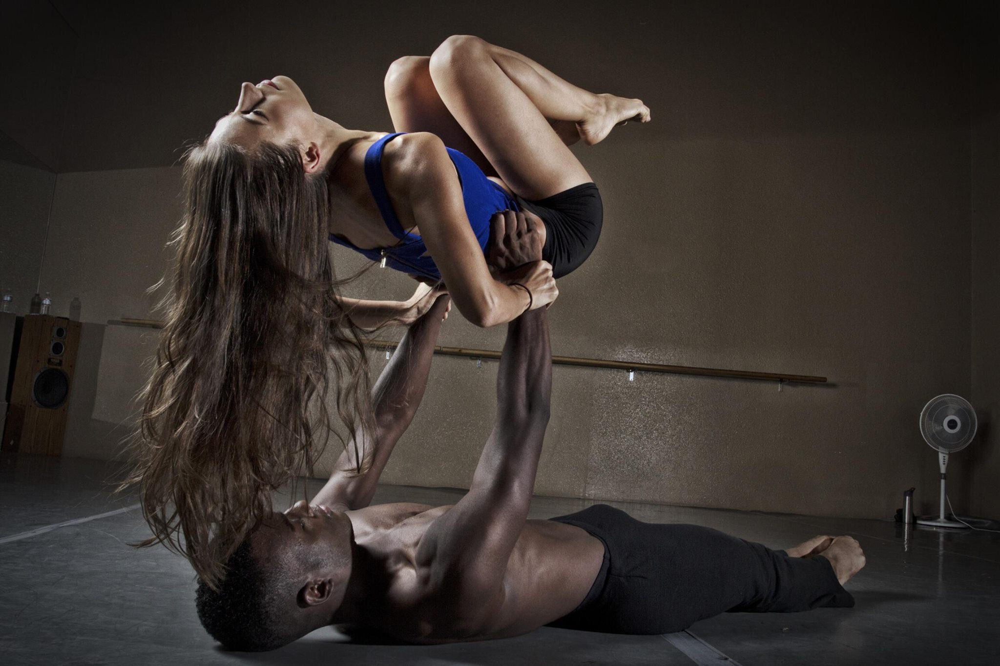
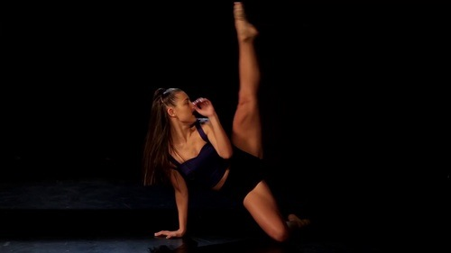
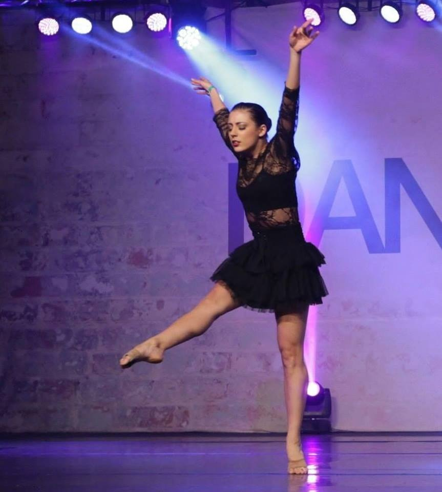
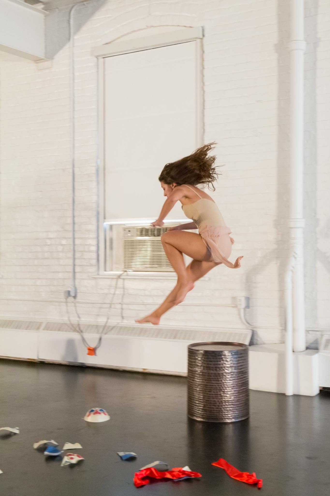

Dawn Morrow, M.F.A. graduated from Hollins University with her Master of Fine Arts in Dance and graduated from Saint Mary's of California (LEAP Program) with a Bachelor of Arts in Performing Arts. She has been dancing for over 25 years. She currently teaches primarily Jazz, Modern, Improvisation, and Contemporary forms. Morrow grew up in Jacksonville, Florida where she trained and taught at local studios, as well as performed with The Florida Ballet, FSCJ, and Orange Park Community Theater. She currently lives in Saint Augustine, Florida.
In 2005, Morrow moved to Los Angeles to pursue the entertainment Hollywood. Some of her performance credits include: Nickelodeon's Victorious, recurring appearances on The Tonight Show with Jay Leno, over 20 music videos, films such as Walk Hard and Struck By Lightning, National commercials for brands such as Coca-Cola, Tampax and Kia, and has had the opportunity to work with prestigious choreographers such as Anne Fletcher and Michael Rooney. She also trained primarily during this time at the EDGE Performing Arts Center in Hollywood, CA. 
Her commercial experience in Los Angeles has created a colorful backdrop of movement with the merging of her recent master's studies centering on contemporary and modern dance forms. Morrow combines her traditional training and contemporary artistic practice with a commercial L.A. edge. 
She also has an extensive background in the convention/competition dance scene. Her choreography is unique, thought-provoking, and “outside the box” while incorporating virtuosic techniques. Several judges awards, first place, top of category, and high score trophies have been won with her work, as well as seen in commercials, music videos, and in live performance for various dance companies. 
Her passion for teaching began in her Senior year of high school and has developed into a career teaching dance to students of all ages, specializing in 8 year olds to adults. She believes dance is a right, not a privilege and has a passion to keep dance alive and relevant within her community, as well as throughout the world. 